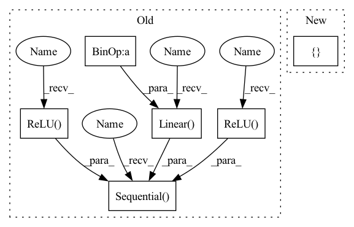

Pattern ID :1045

Before Change
self.input_feat_len = input_feat_len
self.net = nn.Sequential(
nn.Linear(self.input_feat_len, self.input_feat_len*3),
nn.ReLU(),
nn.Linear(self.input_feat_len*3, self.input_feat_len*3),
nn.ReLU(),
nn.Linear(self.input_feat_len*3, self.input_feat_len),
nn.ReLU(),
nn.Linear(self.input_feat_len, 1)
)
def forward(self, x: torch.Tensor) -> torch.Tensor:
return self.net(x)
After Change
self.num_layers = num_layers
self.width = width
self.linears = nn.ModuleList([nn.Linear(self.input_feat_len, width)])
self.linears.extend([nn.Linear(width, width) for i in range(1, self.num_layers-1)])
self.output = nn.Linear(width, 1)
In pattern: SUPERPATTERN
Frequency: 3
Non-data size: 6
Instances
Fragment ID: 3213731
Project Name: microsoft/archai
Commit Name: de9f58e7d18749d3dc65f6edada0285fb264dd04
Time: 2022-12-16
Author: dedey@microsoft.com
File Name: archai/nas/predictive_dnn_ensemble.py
M Class Name: FFEnsembleMember
N Class Name: FFEnsembleMember
M Method Name: __init__(4)
N Method Name: __init__(2)
M Parent Class: nn.Module
N Parent Class: nn.Module
M File Name: archai/nas/predictive_dnn_ensemble.py
N File Name: archai/nas/predictive_dnn_ensemble.py
M Start Line: 90
M End Line: 103
N Start Line: 97
N End Line: 106
'>
Before Change
l = input_size // 8
mult1, mult2 = mlp_hidden_mults
self.mlp = nn.Sequential(
nn.Linear(input_size, l * mult1),
nn.ReLU(),
nn.Linear(l * mult1, l * mult2),
nn.ReLU(),
nn.Linear(l * mult2, dim_out)
)
def forward(self, x_categ, x_cont):
assert x_categ.shape[-1] == self.num_categories, f"you must pass in {self.num_categories} values for your categories input"
x_categ += self.categories_offset
After Change
l = input_size // 8
hidden_dimensions = list(map(lambda t: l * t, mlp_hidden_mults))
all_dimensions = [input_size, *hidden_dimensions, dim_out]
self.mlp = MLP(all_dimensions)
def forward(self, x_categ, x_cont):
'>
Fragment ID: 3213697
Project Name: lucidrains/tab-transformer-pytorch
Commit Name: 474d9654d739c8004502c08a49ba6fed51afadb6
Time: 2020-12-18
Author: lucidrains@gmail.com
File Name: tab_transformer_pytorch/tab_transformer_pytorch.py
M Class Name: TabTransformer
N Class Name: TabTransformer
M Method Name: __init__(1)
N Method Name: __init__(1)
M Parent Class: nn.Module
N Parent Class: nn.Module
M File Name: tab_transformer_pytorch/tab_transformer_pytorch.py
N File Name: tab_transformer_pytorch/tab_transformer_pytorch.py
M Start Line: 90
M End Line: 134
N Start Line: 145
N End Line: 150
'>
Before Change
self.input_feat_len = input_feat_len
self.net = nn.Sequential(
nn.Linear(self.input_feat_len, self.input_feat_len*3),
nn.ReLU(),
nn.Linear(self.input_feat_len*3, self.input_feat_len*3),
nn.ReLU(),
nn.Linear(self.input_feat_len*3, self.input_feat_len),
nn.ReLU(),
nn.Linear(self.input_feat_len, 1)
)
def forward(self, x: torch.Tensor) -> torch.Tensor:
return self.net(x)
After Change
self.num_layers = num_layers
self.width = width
self.linears = nn.ModuleList([nn.Linear(self.input_feat_len, width)])
self.linears.extend([nn.Linear(width, width) for i in range(1, self.num_layers-1)])
self.output = nn.Linear(width, 1)
'>
Fragment ID: 3213735
Project Name: microsoft/archai
Commit Name: de9f58e7d18749d3dc65f6edada0285fb264dd04
Time: 2022-12-16
Author: dedey@microsoft.com
File Name: archai/nas/predictive_dnn_ensemble.py
M Class Name: FFEnsembleMember
N Class Name: FFEnsembleMember
M Method Name: __init__(4)
N Method Name: __init__(2)
M Parent Class: nn.Module
N Parent Class: nn.Module
M File Name: archai/nas/predictive_dnn_ensemble.py
N File Name: archai/nas/predictive_dnn_ensemble.py
M Start Line: 90
M End Line: 103
N Start Line: 97
N End Line: 106
'>
Before Change
stride=np.array(stride, dtype=np.float32),
)
// noinspection PyUnboundLocalVariable
self.rgb_cnn = nn.Sequential(
nn.Conv2d(
in_channels=self._n_input_rgb,
out_channels=32,
kernel_size=self._cnn_layers_kernel_size[0],
stride=self._cnn_layers_stride[0],
),
nn.ReLU(True),
nn.Conv2d(
in_channels=32,
out_channels=64,
kernel_size=self._cnn_layers_kernel_size[1],
stride=self._cnn_layers_stride[1],
),
nn.ReLU(True),
nn.Conv2d(
in_channels=64,
out_channels=32,
kernel_size=self._cnn_layers_kernel_size[2],
stride=self._cnn_layers_stride[2],
),
// nn.ReLU(True),
nn.Flatten(),
nn.Linear(32 * rgb_cnn_dims[0] * rgb_cnn_dims[1], output_size),
nn.ReLU(True),
)
self.layer_init(self.rgb_cnn)
if self._n_input_depth > 0:
for kernel_size, stride in zip(
After Change
kernel_size=np.array(kernel_size, dtype=np.float32),
stride=np.array(stride, dtype=np.float32),
)
layer_channels = [32, 64, 32]
// noinspection PyUnboundLocalVariable
self.rgb_cnn = make_cnn(
input_channels=self._n_input_rgb,
'>
Fragment ID: 3213739
Project Name: allenai/allenact
Commit Name: ce6f216b3b535e9f7730dd3ea153f8f86c2c9c99
Time: 2020-03-27
Author: jordis@allenai.org
File Name: models/basic_models.py
M Class Name: SimpleCNN
N Class Name: SimpleCNN
M Method Name: __init__(3)
N Method Name: __init__(3)
M Parent Class: nn.Module
N Parent Class: nn.Module
M File Name: models/basic_models.py
N File Name: models/basic_models.py
M Start Line: 90
M End Line: 156
N Start Line: 91
N End Line: 126